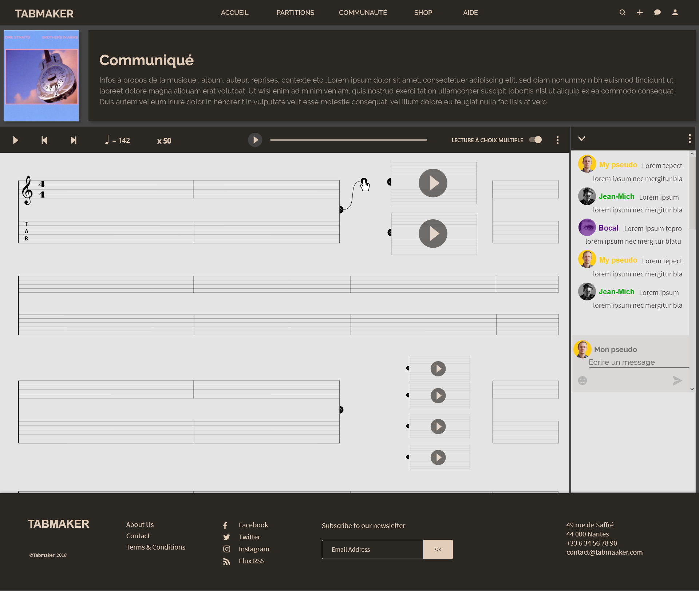
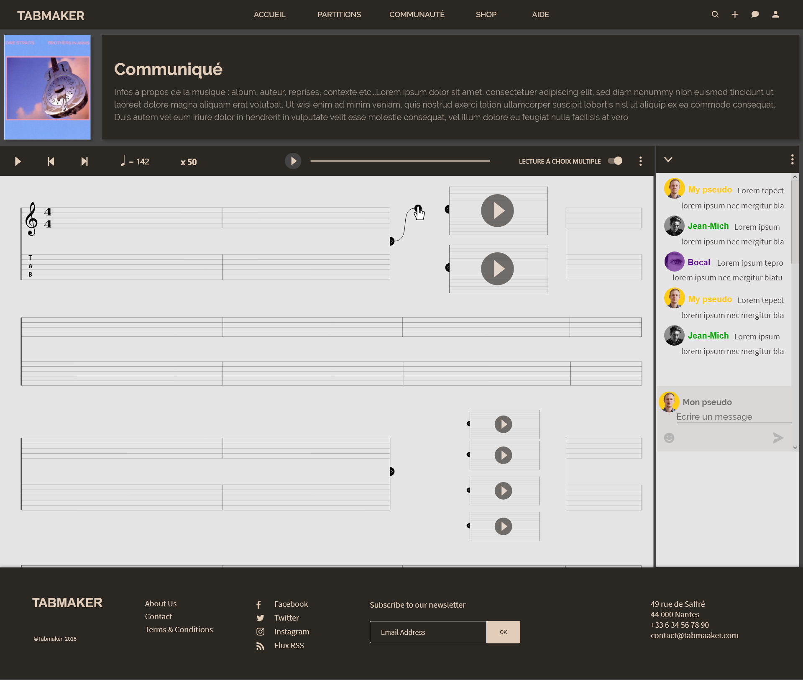

tabmaker
UX / UI
< WORKS
UX / UI
Tabmaker get together musicians that need help or motivation to write, find and pursue tablatures. It is a social platform where musicians could work together to create new tablatures of any song. Whereas writing tablatures could be usually tedious, users can be able to work on the same paritition at the same time, proposing many ways, difficulty or version of a same song. Tabmaker aims to create a dynamic around the community of musicians who need help to write and pursue a tablature, but also for whose are more prolific and professional and want to share their works. In this way, "reader" people can be able to choose to read the tablature following the classic way or choosing every part of the transcription that they prefer, or need according to their level.
 



©Raphaël Perraud 2019